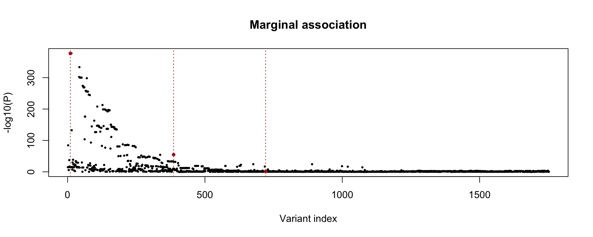
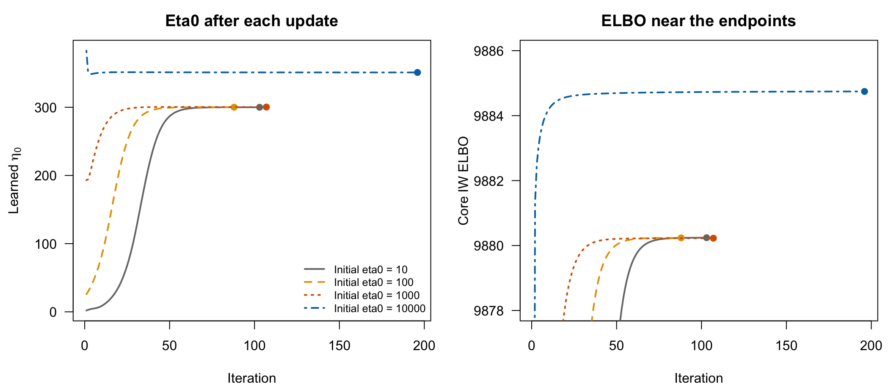
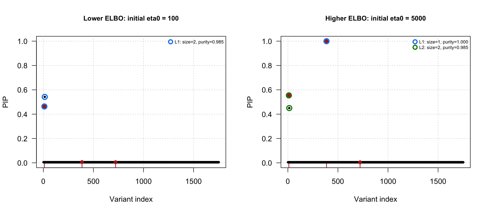

IW initialization and the eta0 profile
Last updated: 2026-11-01
Checks: 7 0
Knit directory: susieRobust-workflowr/
This reproducible R Markdown analysis was created with workflowr (version 1.7.2). The Checks tab describes the reproducibility checks that were applied when the results were created. The Past versions tab lists the development history.
Great! Since the R Markdown file has been committed to the Git repository, you know the exact version of the code that produced these results.
Great job! The global environment was empty. Objects defined in the global environment can affect the analysis in your R Markdown file in unknown ways. For reproduciblity it’s best to always run the code in an empty environment.
The command set.seed(20261018) was run prior to running
the code in the R Markdown file. Setting a seed ensures that any results
that rely on randomness, e.g. subsampling or permutations, are
reproducible.
Great job! Recording the operating system, R version, and package versions is critical for reproducibility.
Nice! There were no cached chunks for this analysis, so you can be confident that you successfully produced the results during this run.
Great job! Using relative paths to the files within your workflowr project makes it easier to run your code on other machines.
Great! You are using Git for version control. Tracking code development and connecting the code version to the results is critical for reproducibility.
The results in this page were generated with repository version 08f617b. See the Past versions tab to see a history of the changes made to the R Markdown and HTML files.
Note that you need to be careful to ensure that all relevant files for
the analysis have been committed to Git prior to generating the results
(you can use wflow_publish or
wflow_git_commit). workflowr only checks the R Markdown
file, but you know if there are other scripts or data files that it
depends on. Below is the status of the Git repository when the results
were generated:
Ignored files:
Ignored: .DS_Store
Ignored: .Rhistory
Ignored: .Rproj.user/
Ignored: analysis/.DS_Store
Ignored: analysis/.RData
Ignored: analysis/.Rhistory
Unstaged changes:
Modified: analysis/01-get-started.Rmd
Modified: analysis/index.Rmd
Note that any generated files, e.g. HTML, png, CSS, etc., are not included in this status report because it is ok for generated content to have uncommitted changes.
These are the previous versions of the repository in which changes were
made to the R Markdown (analysis/04-IW-eta-profile.Rmd) and
HTML (docs/04-IW-eta-profile.html) files. If you’ve
configured a remote Git repository (see ?wflow_git_remote),
click on the hyperlinks in the table below to view the files as they
were in that past version.
| File | Version | Author | Date | Message |
|---|---|---|---|---|
| Rmd | 08f617b | dodat-stats | 2026-11-01 | Add marginal associations and PIPs for the two IW solutions |
| html | a0ef11a | dodat-stats | 2026-11-01 | Build site. |
| Rmd | b336346 | dodat-stats | 2026-11-01 | Simplify IW tutorial and directly fit five initializations |
| html | 9403ff0 | dodat-stats | 2026-11-01 | Build site. |
| Rmd | 49e9d6f | dodat-stats | 2026-11-01 | Compare independent IW initializations and their converged endpoints |
| html | 5214cb5 | dodat-stats | 2026-11-01 | Build site. |
| Rmd | 8931d5d | dodat-stats | 2026-11-01 | Connect IW initialization branches to credible sets and SER fallback |
| html | 5826613 | dodat-stats | 2026-11-01 | Build site. |
| Rmd | a119dcd | dodat-stats | 2026-11-01 | Document IW optimization branches and the fixed-eta ELBO profile |
1. Load the simulated data
This 1 Mb locus has 1,752 SNPs, \(N=200{,}000\), \(N_0=5{,}000\), \(T=200\), \(L_{\mathrm{true}}=3\) and \(h^2=1\%\). We use shared European-like growth, recombination \(10^{-8}\), and random normal causal effects. The saved file contains the original study LD, reference LD and association statistics.
library(susieRobust)
library(susieR)
# This analysis uses susieRobust 0.0.0.9002 and susieR 0.14.2.
example <- readRDS("data/iw-eta-profile/example.rds")
R <- example$R; R0 <- example$R0; v <- example$v
N <- example$N; causal <- example$causal
L_max <- 10Lz <- sqrt(N)*v # Working Gaussian association z-scores.
neg_log10p <- -(log(2) + pnorm(-abs(z), log.p=TRUE))/log(10)
plot(seq_along(v), neg_log10p, pch=16, cex=0.5,
xlab="Variant index", ylab="-log10(P)", main="Marginal association")
points(causal, neg_log10p[causal], pch=16, cex=0.8, col="firebrick")
abline(v=causal, col="firebrick", lty=3)
Red points and vertical lines mark the true causal variants.
2. Fit IW from different initial values
Fit the same data from five initial values of \(\eta_0\). Both \(\eta_0\) and \(\lambda\) are learned. Restarts are disabled; SER fallback is enabled.
eta0_init <- c(10, 100, 1000, 5000, 10000)
fits <- lapply(eta0_init, function(initial) {
susie_iw(v=v, R0=R0, N=N, L=L_max, eta0_init=initial,
lambda_min=1e-5, lambda_max=0.2,
scaled_prior_variance=0.2, estimate_prior_variance=TRUE,
max_iter=3000, tol=1e-8, optimizer_starts=3,
restart_on_nonconvergence=FALSE,
ser_fallback=TRUE, partition_ser=FALSE,
coverage=0.95, min_abs_corr=0.5, purity_matrix="R0",
track_fit=TRUE)
})
names(fits) <- eta0_initReport the IW ELBO and CS count before fallback. Fallback is applied after fitting if zero or one CS remains after purity filtering and deduplication.
results <- do.call(rbind, lapply(seq_along(fits), function(i) {
f <- fits[[i]]
data.frame(Start=eta0_init[i], eta0=f$eta0,
ELBO=tail(f$raw_fit$elbo, 1),
Iterations=length(f$raw_fit$elbo), CSs=length(f$raw_sets),
SER=f$postprocess$fallback_used, Converged=f$converged)
}))
knitr::kable(results, digits=3, row.names=FALSE)| Start | eta0 | ELBO | Iterations | CSs | SER | Converged |
|---|---|---|---|---|---|---|
| 10 | 299.955 | 9880.241 | 103 | 1 | TRUE | TRUE |
| 100 | 300.065 | 9880.236 | 88 | 1 | TRUE | TRUE |
| 1000 | 300.288 | 9880.226 | 107 | 1 | TRUE | TRUE |
| 5000 | 351.032 | 9884.745 | 191 | 2 | FALSE | TRUE |
| 10000 | 351.031 | 9884.745 | 196 | 2 | FALSE | TRUE |
traces <- lapply(fits, function(f) f$iw$optimization_trace)
colors <- c("grey50", "#E69F00", "#D55E00", "#009E73", "#0072B2")
xlim <- c(1, max(results$Iterations))
par(mfrow=c(1, 2), mar=c(4.2, 4.5, 2.5, 1))
plot(NA, xlim=xlim, ylim=range(unlist(lapply(traces, `[[`, "eta0"))),
xlab="Iteration", ylab=expression(eta[0]),
main="Eta0 after each update", las=1)
for (i in seq_along(traces)) {
d <- traces[[i]]
lines(d$iteration, d$eta0, col=colors[i], lty=i, lwd=2)
points(tail(d$iteration, 1), tail(d$eta0, 1), col=colors[i], pch=19)
}
legend("bottomright", paste("Initial eta0 =", eta0_init),
col=colors, lty=seq_along(fits), lwd=2, bty="n", cex=0.8)
plot(NA, xlim=xlim, ylim=c(9878, 9886),
xlab="Iteration", ylab="Core IW ELBO",
main="ELBO near the endpoints", las=1)
for (i in seq_along(traces)) {
d <- traces[[i]]
lines(d$iteration, d$elbo, col=colors[i], lty=i, lwd=2)
points(tail(d$iteration, 1), tail(d$elbo, 1), col=colors[i], pch=19)
}
par(mfrow=c(1, 1))The curves start after the first update; points mark the stopping iterations. The ELBO panel zooms in on the endpoints. Small starts tend to reach the lower-ELBO, one-CS solution and trigger SER fallback; larger starts can reach a higher-ELBO solution with multiple CSs. This is a numerical example, not a guarantee for other loci.
Compare the two IW posteriors before SER fallback, using starts 100 and 5,000. Circles mark retained credible sets; red points mark causal variants.
low <- fits[["100"]]
high <- fits[["5000"]]
par(mfrow=c(1, 2))
plot_pip(low$raw_fit, sets=low$raw_sets, causal=causal, R=R0,
main="Lower ELBO: initial eta0 = 100")
plot_pip(high$raw_fit, sets=high$raw_sets, causal=causal, R=R0,
main="Higher ELBO: initial eta0 = 5000")
par(mfrow=c(1, 1))3. Profile ELBO
For comparison, load the earlier fixed-\(\eta_0\) fits. These used independent fits and continuation in both directions, with fallback disabled. The coarse grid has 21 log-spaced values from 100 to 10,000 (\(10^{-8}\) tolerance, at most 1,000 iterations); the refined grid has 25 values from 200 to 600 (\(10^{-10}\) tolerance, at most 2,000 iterations).
coarse <- read.csv("data/iw-eta-profile/profile_results.csv")
fine <- read.csv("data/iw-eta-profile/refined_results.csv")
cols <- c("path", "eta0_fixed", "elbo", "converged")
all_fits <- rbind(coarse[, cols], fine[, cols])
best_found <- function(x) {
x <- x[x$converged, ]
x <- x[order(-x$elbo), ]
x <- x[!duplicated(round(x$eta0_fixed, 8)), ]
x[order(x$eta0_fixed), ]
}draw_profile <- function(points, envelope, xlim, ylim, title) {
plot(envelope$eta0_fixed, envelope$elbo, type="n", log="x",
xlim=xlim, ylim=ylim, xlab=expression("Fixed " * eta[0]),
ylab="IW ELBO", main=title, las=1)
paths <- c("ascending", "descending")
for (i in seq_along(paths)) {
d <- points[points$path == paths[i], ]
d <- d[order(d$eta0_fixed), ]
lines(d$eta0_fixed, d$elbo, col=c("#D55E00", "#0072B2")[i], lwd=2)
}
lines(envelope$eta0_fixed, envelope$elbo, lty=2, lwd=2)
cold <- subset(coarse, path == "cold")
points(cold$eta0_fixed, cold$elbo, pch=21, bg="white", col="grey40")
failed <- subset(all_fits, !converged)
points(failed$eta0_fixed, failed$elbo, pch=4, col="red", lwd=2)
}
par(mfrow=c(1, 2), mar=c(4.2, 4.5, 2.5, 1))
draw_profile(coarse, best_found(all_fits), c(100, 10000), range(all_fits$elbo),
"Requested range")
legend("bottomleft",
c("Low to high", "High to low", "Best converged", "Independent", "Not converged"),
col=c("#D55E00", "#0072B2", "black", "grey40", "red"),
lty=c(1, 1, 2, NA, NA), pch=c(NA, NA, NA, 1, 4), bty="n", cex=0.8)
draw_profile(fine, best_found(fine), c(200, 600), c(9870, 9886), "Near the peak")
par(mfrow=c(1, 1))There are two optimization branches, but one peak in the best-found profile. Profiling takes the best solution over the other parameters at each \(\eta_0\), so the lower branch can disappear from the envelope. The red cross marks the one nonconverged fit, which is excluded from that envelope. This is the best profile found, not a certified global optimum.
sessionInfo()R version 4.6.1 (2026-06-24)
Platform: aarch64-apple-darwin23
Running under: macOS Golden Gate 27.2
Matrix products: default
BLAS: /Library/Frameworks/R.framework/Versions/4.6/Resources/lib/libRblas.0.dylib
LAPACK: /Library/Frameworks/R.framework/Versions/4.6/Resources/lib/libRlapack.dylib; LAPACK version 3.12.1
locale:
[1] C.UTF-8/C.UTF-8/C.UTF-8/C/C.UTF-8/C.UTF-8
time zone: America/New_York
tzcode source: internal
attached base packages:
[1] stats graphics grDevices utils datasets methods base
other attached packages:
[1] susieR_0.14.2 susieRobust_0.0.0.9002 workflowr_1.7.2
loaded via a namespace (and not attached):
[1] sass_0.4.10 generics_0.1.4 stringi_1.8.9 lattice_0.22-9
[5] digest_0.6.39 magrittr_2.0.5 evaluate_1.0.5 grid_4.6.1
[9] RColorBrewer_1.1-3 fastmap_1.2.0 plyr_1.8.9 rprojroot_2.1.1
[13] jsonlite_2.0.0 Matrix_1.7-5 processx_3.9.0 whisker_0.4.1
[17] reshape_0.8.10 mixsqp_0.3-54 promises_1.5.0 httr_1.4.9
[21] scales_1.4.0 jquerylib_0.1.4 cli_3.6.6 zigg_0.0.2
[25] rlang_1.3.0 crayon_1.5.3 cachem_1.1.0 yaml_2.3.12
[29] otel_0.2.0 tools_4.6.1 dplyr_1.2.1 ggplot2_4.0.3
[33] httpuv_1.6.17 Rfast_2.1.5.2 vctrs_0.7.3 R6_2.6.1
[37] matrixStats_1.5.0 lifecycle_1.0.5 git2r_0.36.2 stringr_1.6.0
[41] fs_2.1.0 irlba_2.3.7 pkgconfig_2.0.3 callr_3.8.0
[45] RcppParallel_6.2.1 pillar_1.11.1 bslib_0.12.0 later_1.4.8
[49] gtable_0.3.6 glue_1.8.1 Rcpp_1.1.2 xfun_0.60
[53] tibble_3.3.1 tidyselect_1.2.1 rstudioapi_0.19.0 knitr_1.51
[57] farver_2.1.2 htmltools_0.5.9 rmarkdown_2.32 compiler_4.6.1
[61] getPass_0.2-4 S7_0.2.2